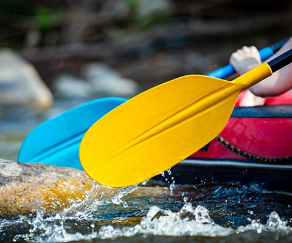

Founded in 1995, White Water Rafting has been a leader in adventure tourism. Our experienced team is dedicated to providing safe and thrilling rafting experiences. We have grown from a small local company to a renowned name in the industry, offering trips across various rivers and terrains. Over the years, we have expanded our operations to include not only rafting but also kayaking, hiking, and camping adventures. Our team of expert guides ensures that every trip is both exciting and educational, sharing their knowledge of the local environment and wildlife. We take pride in our commitment to sustainability, working to preserve the natural beauty of the rivers and landscapes we explore. Join us as we continue to create unforgettable experiences for adventurers from all walks of life.

Our commitment to safety and customer satisfaction has earned us numerous awards and recognitions. We are proud to be a part of the adventure tourism community, promoting environmental conservation and responsible tourism practices. Over the years, we have built a reputation for excellence, offering personalized experiences that cater to adventurers of all skill levels. From beginners seeking their first taste of the rapids to seasoned thrill-seekers, we ensure every trip is unforgettable. Join us as we continue to explore new rivers, create lasting memories, and inspire a love for the great outdoors.